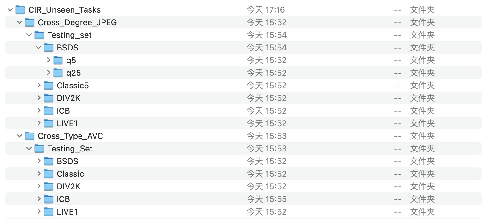

We propose a comprehensive benchmark dataset for universal compressed image restoration (CIR), covering 21 types of degradations from 7 popular traditional and learned codecs. Traditional codecs includes JPEG[1], VVC[2], HEVC[3], WEBP[4]. Learned codecs includes HIFIC[5], \( C_{\text{SSIM}} \)[6], \( C_{\text{PSNR}} \)[6]. Within each codec, we apply three levels distortions:
We also release unseen tasks testsets apart from CIR dataset. It consists of "Cross Degrees" and "Cross Types". We choose JPEG code from QF value [5,25] and select AVC(H.264) codec from vaules [47,42,37]. The branch is shown in following figure.
We present MoE-DiffIR, an innovative universal compressed image restoration (CIR) method with task-customized diffusion priors. This intends to handle two pivotal challenges in the existing CIR methods: (i) lacking adaptability and universality for different image codecs, e.g., JPEG and WebP; (ii) poor texture generation capability, particularly at low bitrates. Specifically, our MoE-DiffIR develops the powerful mixture-of-experts (MoE) prompt module, where some basic prompts cooperate to excavate the task-customized diffusion priors from Stable Diffusion (SD) for each compression task. Moreover, the degradation-aware routing mechanism is proposed to enable the flexible assignment of basic prompts. To activate and reuse the cross-modality generation prior of SD, we design the visual-to-text adapter for MoE-DiffIR, which aims to adapt the embedding of low-quality images from the visual domain to the textual domain as the textual guidance for SD, enabling more consistent and reasonable texture generation. We also construct one comprehensive benchmark dataset for universal CIR, covering 21 types of degradations from 7 popular traditional and learned codecs. Extensive experiments on universal CIR have demonstrated the excellent robustness and texture restoration capability of our proposed MoE-DiffIR.
[1] Wallace, G.K.: The jpeg still picture compression standard. Communications of the ACM 34(4), 30–44 (1991)
[2] Bross, B., Wang, Y.K., Ye, Y., Liu, S., Chen, J., Sullivan, G.J., Ohm, J.R.: Overview of the versatile video coding (vvc) standard and its applications. IEEE Transactions on Circuits and Systems for Video Technology 31(10), 3736–3764 (2021)
[3] Sze, V., Budagavi, M. and Sullivan, G.J., 2014. High efficiency video coding (HEVC). In Integrated circuit and systems, algorithms and architectures (Vol. 39, p. 40). Berlin, Germany: Springer.
[4] Ginesu, G., Pintus, M., Giusto, D.D.: Objective assessment of the webp image coding algorithm. Signal processing: image communication 27(8), 867–874 (2012)
[5] Mentzer, F., Toderici, G.D., Tschannen, M. and Agustsson, E., 2020. High-fidelity generative image compression. Advances in Neural Information Processing Systems, 33, pp.11913-11924.
[6] Cheng, Z., Sun, H., Takeuchi, M. and Katto, J., 2020. Learned image compression with discretized gaussian mixture likelihoods and attention modules. In Proceedings of the IEEE/CVF conference on computer vision and pattern recognition (pp. 7939-7948).
[7] Agustsson, E., Timofte, R.: Ntire 2017 challenge on single image super-resolution: Dataset and study. In: Proceedings of the IEEE conference on computer vision and pattern recognition workshops. pp. 126–135 (2017)
@inproceedings{ren2024MoE-DiffIR,
title={MoE-DiffIR: Task-customized Diffusion Priors for Universal Compressed Image Restoration},
author={Ren, Yulin and Li, Xin and Li, Bingchen and Wang, Xingrui and Guo, Mengxi and Zhao, Shijie and Zhang, Li and Chen, Zhibo},
booktitle={European Conference on Computer Vision},
year={2024},
organization={Springer}
}